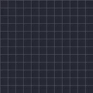

Avanzamento disegno

Traccia un disegno a mano libera o il contorno di una forma, dall'inizio alla fine. Anima Fine con keyframe da 0% a 100% per vedere il disegno prendere forma. Funziona meglio sulle forme senza riempimento e con contorno.
Impostazioni
| Impostazione | Tipo | Intervallo | Predefinito |
|---|---|---|---|
| Inizio | Numero | Da 0% a 100% | 0% |
| Fine | Numero | Da 0% a 100% | 100% |